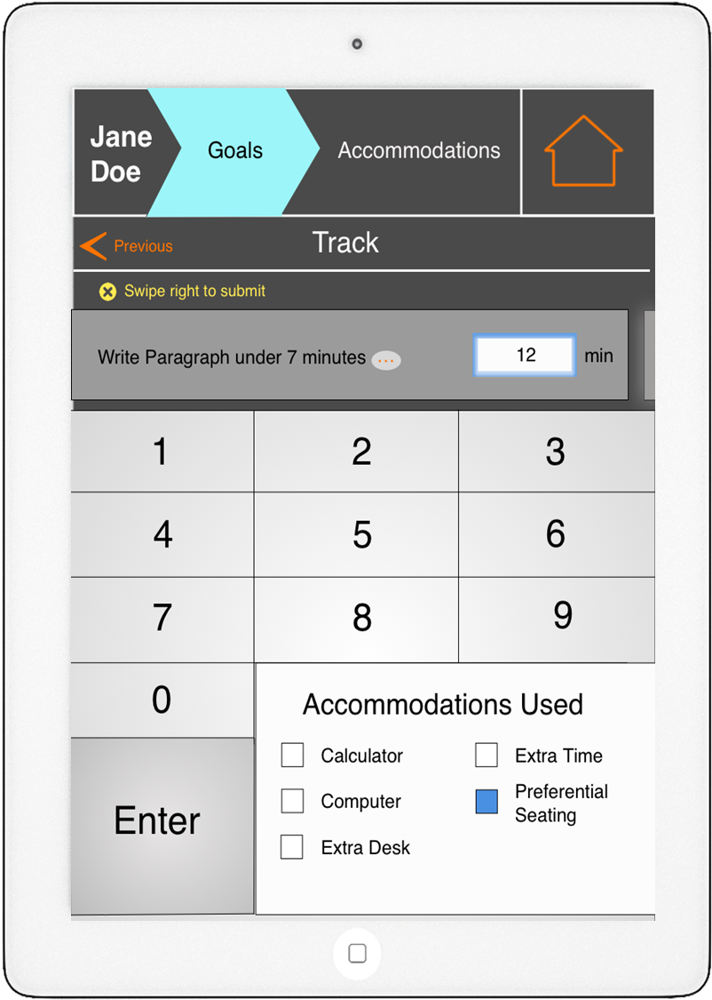
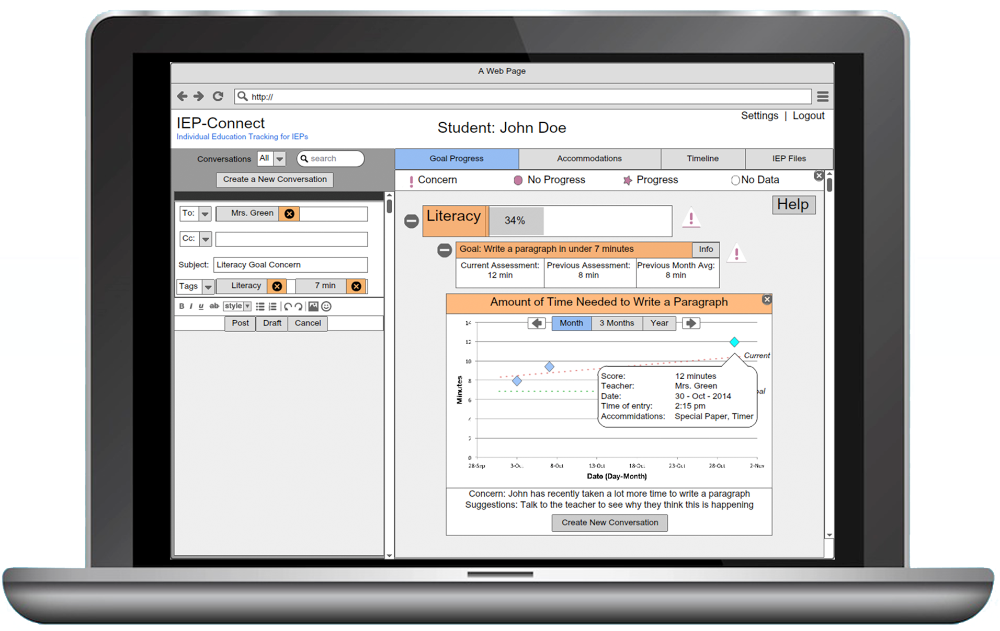
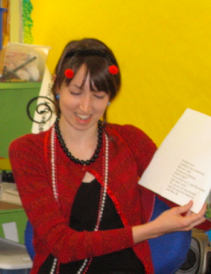

Problem and Solution Overview
Individualized Education Programs (IEPs) were created in an effort to ensure special education students received appropriate accommodations and measurable goals to work towards during their educational careers. The potential for IEPs to be helpful and instructive documents collaborated on by parents, teachers, and students, is more often than not lost in the difficulty of tracking goal progress and miscommunication between stakeholders. To address this critical needs area in education we propose an IEP data collection app for teachers to be synced with a parent/teacher web portal to create clear channels for purposeful and accurate communication. |
|
|  | IEP-Connect: App Tracker Focus: Timely data collection aide for teachers Teachers with tablet access are able to track IEP goals in a systematic way using IEP-Connect. With this app teachers don’t need to worry about remembering on which piece of paper they wrote down an incident of goal progress, they can simply click to the student profile and quickly record this information in real time. With regular app usage, the growth of information to share and analyze between parents and teachers concerning IEP progress is guaranteed to increase |
|  | With the IEP-Connect web portal, parents no longer have to track-down teachers in order to receive updates on their child’s progress. The parent view of the web portal syncs directly with the IEP-Connect Classroom Tracker providing real time updates to parents. Parents can see recent scores and provided accommodations in the context of the child’s progress history. Additionally, the data is provided at varying levels of granularity from progress symbols to percentage of goal completed to the specific scores of a recent assessment. The web portal also fosters open communication between all members of the IEP group by providing an interface to converse with the IEP team. The conversations are tagged with their topic allowing the conversations to be filtered by category allowing quick updates on IEP topics, and ensuring valuable information in conversations can be found later. |
IEP-Connect Classroom Demo
Welcome to the IEP-Connect interactive prototype. IEP-Connect is a two tiered data exchange platform for teachers and parents to communicate about student IEP progress. The prototype will walk you through each of our proposed systems: a classroom app for data collection and the parent view of our web platform for communication about student data. We are excited to have you experience the key functionality of IEP-Connect; however, please note as we are still in development your accessibility is currently customized to walkthrough our primary tasks only.
Congratulations! You have completed the task. |
IEP-Connect: Parent Portal
Welcome to the IEP-Connect interactive prototype. IEP-Connect is a two tiered data exchange platform for teachers and parents to communicate about student IEP progress. The prototype will walk you through each of our proposed systems: a classroom app for data collection and the parent view of our web platform for communication about student data. We are excited to have you experience the key functionality of IEP-Connect; however, please note as we are still in development your accessibility is currently customized to walkthrough our primary tasks only.
|
|
Click Here to Begin Task 1 Task 1: Review the Student's Literacy goal progress and create a new conversation detail your concern.
Click Here to Begin Task 2 Task 2: Task Create new conversation from home screen about the Student's Literacy goal progress. |
Design Process
Defining the problem space through Contextual Inquiry :
-
Our contextual inquiry allowed to begin to understand the most salient of problems with the IEP Process below are some examples of problem that surfaced through this process.
- Storage/Access: Persistence of important IEP data and paperwork. IEP information is often lost from meeting to meeting from year to year, when teachers change, and when schools change. Some examples of lost information include interventions tried, whether interventions succeeded or failed, how instruction was individualized for the student, where the student is in their progress towards a goal, etc.
- Communication among IEP team Members: Currently the infrequency of meetings and other forms of communication in the IEP process is a major issue. Teachers have a hard time staying on the same page with a child’s progress and needs across classrooms.
- Measuring progress: Current Progress reports do not give parents meaningful information about their student's progress towards their goals.
- Student Engagement: There exists an IEP Disability Stigma in public education and our society at large regarding special education students. Some disabilities carry a more negative stigma than others and impact teacher ability to deliver services. Students who receive education about their own disabilities and how to use accommodation are more likely to be advocates for themselves
- Delivery of services : Students /Parents/Teachers need education about disabilities and strategies help to facilitate the delivery of IEP services. Teachers have serious time constraints that affect their ability to deliver services, report progress, and communicate to parents.
Narrowing the scope of our project through Sketching,Story Boarding, andTask Analysis
- We were able to narrow down the most important task and consider how they might work in a design looking at specific tasks.
- Parents would have an easier time tracking their child’s IEP if there was a digitized means of accessing and presenting all of their child’s
IEP information. These could include a useful summary about their child’s progress, confirmation that services are being provided,
database of goals with corresponding objective and task analysis views, and a simple summary about the available programs and
benefits that are available to their child. Teachers could effectively help students’ with IEPs if given a way to track and update a student’s
academic progress in a non time consuming manner, simple interpretation of old IEP plans that both worked and didn’t, track student’s use
of their accommodations, and be able to inform parents of student performance in a non time consuming way.
Fine-tuning the Design through Paper Prototyping,Usability Testing and Digital Mock up
Classroom App Changes from initial design:
- Improved clarity of goals that were presented by having the option to view an expanded version of the goal. This decision came from various participants confused at what was actually being tracked and what it was working towards (usability test with parent 1).
- Added two new pages, one for the goals in-progress and another for the goals already tracked so that the user can undo the goals they’ve submitted. After our design critique in section and having the lecture that talked about undoing inputs we decided to separate in-progress and tracked goals. This allows the user to view the history of what has been tracked and alter/ delete entries that were done incorrectly (usability test with undergraduate).
- Added breadcrumbs of sorts to the top of the interface to allow quick selection of going back to previous pages. This idea was also added after the design critique in section to have the ability of going to previous pages (in class usability test).
- Changed the submission interaction; instead of tapping to submit a goal tracking, they would swipe right. This was chosen as a way to take advantage of the touch screen capabilities of the design, to simplify the speed of the interaction when submitting multiple goals. Imagine if you are entering multiple yes/no goals. Before you would hit yes or no then tap submit for each entry. Now you can go down the list hitting yes/no then swipe right once to submit all of the entries. Additionally the swiping tracked entries to the right corresponds well with the previously tracked entries being stored on the right page (usability test undergraduate).
Classroom App Changes from paper to digital design:
- Faded side screens to show swiping capabilities better.
- Incorporated “previous” button
- Incorporated a “settings” button
- Color coordination with web view (blue/orange) suggested from digital critique
Web Portal Changes from initial design:
- Added more descriptive labels to the graphs after confusion in class design critiques about what was being measured.
- Moved the y-axis to the left side of the graph to be consistent with conventions. This change was made after an in class critique.
- Removed the accommodations timeline from underneath the goal progress section to simplify the amount of information relayed at one time. In our first in class usability test the participants were confused when asked to navigate the timeline. They tried to navigate the goal section instead.
- We added a legend to give information about what the colors indicate for goal progress.
- Changed arrow drop downs to plus and minus signs. When a lot of things were expanded participants became confused by the direction of the arrows.
- Split screen design of the note section was changed to view that featured the notes and showed the new notes screen only when a new was created.
Web Portal Changes from paper to digital design:
- moved the expanders to the left side to be consistent with other applications. This was in response to critique from a parent usability test.
- Stripped all color from the graphs and progress bars due to confusion in usability test about what the color indicated, ex: 34% concern
- used only symbols to represent progress instead of color after critique in section to use less colors on our interface.
- changed the first drop down to show recent test scores instead of another progress bar
- added a trendline to the graph and added the ability to click on a data point to see more information about what was tracked. This was added after parent was trying to click on data points during the usability test.
- added the ability to create a new conversation from the graph on the right that will autofill the conversation tags. This was added after a parent didn’t want to navigate back and forth in a usability test.
- Changed the word “Note” to “Conversation” to better convey the interaction.
- Tags given a expanding/minimizing scheme and checkboxes. This was added after critique from a parent that it should be a lot simpler to add the tags. We decided to make it consistent with the goal progress navigation.
Documents
 |
Meet the IEP-Connect Team
 |
 |  |
|
Lane Felker (CSE)Interface Maverick |
Kristen Olson (MHCI+D)Stamp of Approval Sealer |
Jessica Wong (CSE)Mock-up Mavin |
Monique Franklin (CSE)IEP Expert Extraodinaire |